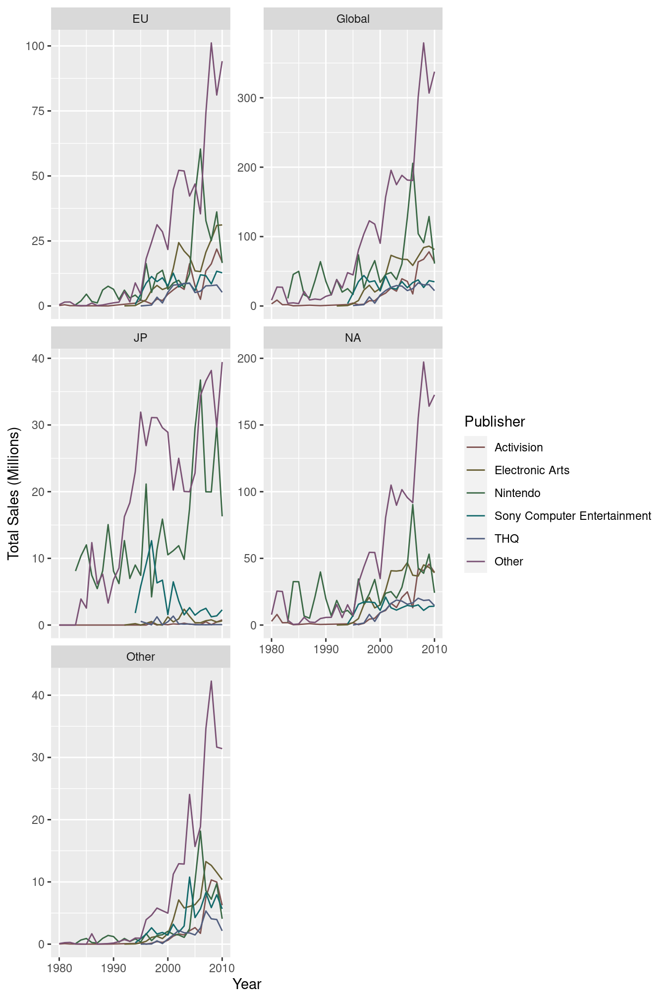

14.3 Residuals
When we create a model, there will be a difference between the model’s predicted value and each data point. These are the model residuals. The smaller the total residual difference, the more accurate the model is. Let’s visualise how we would calculate our residuals:


To compare different models though, we need to boil down this residuals into a single metric. For this we use the root-mean-square-error or RMSE. The calculation for this metric is quite easy - calculate the difference, square it, average it and then take the root. Let’s write some functions to produce some models and get some predictions, and then compare the RMSE:
# Create some models with different coefficients
coefficients <- data.frame(
id = 1:10,
a = runif(10, min = 35, max = 40),
a1 = runif(10, min = -6, max = -5)
)
# Plot the models
ggplot(mtcars, aes(x = wt, y = mpg)) +
geom_point() +
geom_abline(data = coefficients, aes(intercept = a, slope = a1, colour = as.factor(id)), alpha = 0.5) +
scale_colour_discrete(name = "Model")
# Create a function to represent our model
model <- function(a, a1, wt) {
a + (wt * a1)
}
# A function to work out the rmse of our model
rmse <- function(a, a1, wt, mpg) {
diff <- model(a, a1, wt) - mpg
sqrt(mean(diff ^ 2))
}Now we now how to calculate our RMSE, let’s apply calculate which of our models has the lowest error:
best_model <- coefficients %>%
# Here we calculate the rmse of each model
dplyr::mutate(rmse = unlist(purrr::map2(a, a1, rmse, wt = mtcars$wt, mpg = mtcars$mpg))) %>%
dplyr::filter(rmse == min(rmse))
print(best_model)## id a a1 rmse
## 1 10 37.46765 -5.350819 2.953621According to our analysis, model 10 has the lowest residual error. Let’s see what that model looks like:
ggplot(mtcars, aes(x = wt, y = mpg)) +
geom_point() +
geom_abline(data = best_model, aes(intercept = a, slope = a1, colour = as.factor(id)), alpha = 0.5) +
scale_colour_discrete(name = "Model")
That looks pretty good, but it’s not perfect. We’ve just tried a number of different values and then chosen the best one. This doesn’t mean that we’ve found the absolute best coefficients for our model. In reality, we’d need to work out the best values by optimising our RMSE function - finding the values that produce the global minimum value from that function.
We’re not going to bother doing that manually, but that’s essentially the process that the lm() function in R uses; it automatically finds the best coefficient values by calculating the RMSE for lots of different values and then finding the best one.